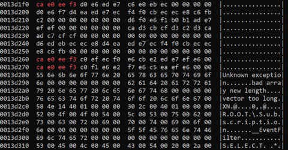
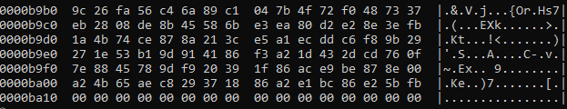
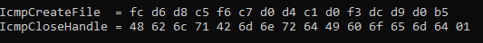
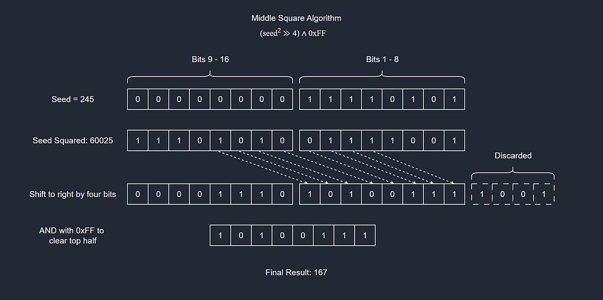
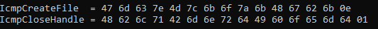
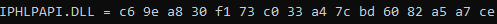
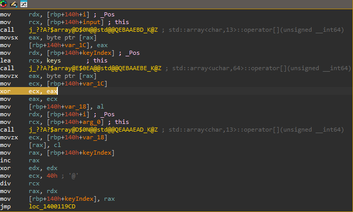
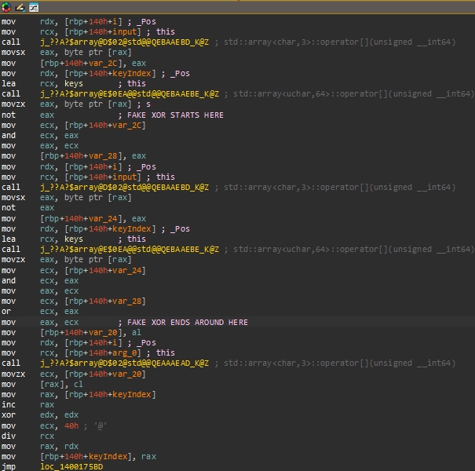

Table of Contents
Introduction
When you are analyzing a piece of malware, or even just benign software in general, the first thing you might look at are strings. Strings could reveal data such as IP Addresses, domain names, error messages, and even things like WMI Queries or embedded scripts. I've seen some malware brazenly brand itself as such using the strings within it.
As a malware developer, you must take care to NOT reveal your presence. One way could be to encrypt the data used by your program. It is easy to grep a domain name or IP addresses. It is much harder to grep for binary data, especially when you have no idea what it might look like.
This could be done by manually encrypting the data and copying or linking it to your code. You might even use an automated obfuscation. But what if there was a way to just write the domain name and have the compiler encrypt it for you? This article aims to introduce methods that can perform encryption at compile time. I will be using C++20 for this, but all of what I am covering it transferable to other compiled languages such as Rust, D, and to an extent, C.
Constant Expressions
According to the C++ documentation, a constant expression "defines an expression that can be evaluated at compile time." This is similar to macros in C, the difference being that actual computation is occurring, not just copy-and-paste. In C++, constant expressions are defined by using the constexpr or consteval specifiers.
constexpr
This specifier was introduced in C++11 and specifies that an expression can optionally be evaluated at compile time. In modern C++, it seems that it is most commonly used as a type-safe replacement for C-Style Macros:
#define PI 3.14149
// changes to
constexpr float PI = 3.14159;
They can also be used to evaluate functions:
constexpr int GCD(int x, int y)
{
return (y == 0) ? x : GCD(y, x % y);
}
It is important to note that just because something is marked as constexpr, that does not mean that it will be evaluated at compile time. The compiler can choose not to.
consteval
However, anything marked as consteval must be evaluable at compile time, you will receive an error otherwise.
consteval int GCD(int x, int y)
{
return (y == 0) ? x : GCD(y, x % y);
}
constexpr int yval = 10;
constexpr compileTime = GCD(23, yval);
int xval = 23;
int compilerError = GDC(xval, 10);
You can think of constexpr as a request to the compiler to evaluate your expression at compile time. You can think of consteval as a contract between you and the compiler that your expression must be evaluable at compile time.
Non-Type Template Paramters and Type (and Non-Type) Deduction
When using templates in C++, you do not necessarily need to use type-ed parameters. Instead, you could literals such as integers or even constexpr variables. This could, for example, be used for sizing as in std::array or in our case, loop and recursive functions:
/// Recursive Constant Expression
template < std::size_t N >
consteval bool contains_b(const char (&str)[N])
{
if constexpr (N == 1)
return false;
if(str[N - 2] == 'b')
return true;
return contains_b(str);
}
/// Iterative Constant Expression
template < std::size_t N >
consteval bool contains_b(const char (&str)[N])
{
for(std::size_t i = 0; i < N; i++)
{
if(str[i] == 'b')
return true;
}
return false;
}
I will be using iteration through all of the examples here. Recursion seems to be used extensively in more complicated template systems like type-lists.
When using those above functions, we do not necessarily need to explicitly pass a parameter for N. Instead, we can have the compiler deduce it for us:
constexpr bool b = contains_b("Homber Simbson");
// is equivalent to
constexpr bool b = contains_b<>("Homber Simbson");
// and
constexpr bool b = contains_b<16>("Homber Simbson");
This can make development easier as we
- can write much less code
- do not have to manually change sizes/types when code inevitably changes
XOR Encryption
This example, and most (if not all) subsequent examples, will use an STL container called std::array. This is a constant expression compatible contains that similar to a C-style array. It takes a type and a size (non-type) as its template parameters.
constexpr uint32_t XOR_KEY = 131;
// auto is used here so we don't need to write out "std::array"
// This is another form of type deduction
template < std::size_t N >
consteval auto XOR_ENC_STR(const char (&str)[N])
{
std::array< char, N > output = {}; // default initialize
for(std::size_t i = 0; i < N - 1; i++)
output[i] = str[i] ^ XOR_KEY;
// optionally, we could add a NULL byte
return output;
}
We can use it to hide data like this:
constexpr auto KL_ICMP_LIB_NAME = CT_XOR_ENC_STRING("IPHLPAPI.DLL");
constexpr auto KL_ICMP_CREATE_FILE_NAME = CT_XOR_ENC_STRING("IcmpCreateFile");
constexpr auto KL_ICMP_SEND_ECHO_NAME = CT_XOR_ENC_STRING("IcmpSendEcho");
constexpr auto KL_ICMP_CLOSE_HANDLE_NAME = CT_XOR_ENC_STRING("IcmpCloseHandle");
and let the compiler deduce types and non-types for us.
Rolling XOR Encryption
You will see no reference to the above strings in the final executable, lest they are referenced elsewhere, unencrypted. However, it is a bit obvious that something is there:
ca e0 ee f3 is "Icmp" encrypted with the XOR key of 131.
One solution could be a rolling set of keys. These could be hardcoded: an array of keys that we iterate through and roll over at the end.
constexpr std::array< uint8_t, 64 > XOR_KEYS = { /* 64 8-bit integers */ };
constexpr std::size_t NUM_XOR_KEYS = XOR_KEYS.size();
template < std::size_t N >
consteval auto ROLLING_XOR_HARDCODED(const char (&str)[N], std::size_t keyIndex = N)
{
std::array< char, N > output = {};
uint8_t key = XOR_KEYS[keyIndex];
for(std::size_t i = 0; i < N; i++)
{
output[i] = str[i] ^ XOR_KEYS[keyIndex];
// increment or roll over
keyInedx = (keyIndex + 1) % NUM_XOR_KEYS;
}
return output;
}
This function uses an array of 64 8-bit integers. It will roll through and possibly back over them to encrypt the string. The starting position in the key array is determined by the length of the string. This could however be “influenced” by adding some null bytes or setting the keyIndex argument manually. It could even be computed algorithmically.

The only disadvantage is that the decryption keys are stored out in the open. This could be solved by encrypting them as well, or perhaps through key generation.
Key Generation Algorithms
These solution require a bit more code, but will note leave a trace of our keys almost anywhere. Here I will demonstrate the Linear Congruential Generation and Middle Square algorithms.
Linear Congruential Generation
The LCG algorithm takes four parameters. Mathematically, it takes a sequence and outputs a sequence.
a is the multiplier. c is the increment. m is the modulus. m defines a range and ensure the output will fall within it.
Here is the constant expression for it:
constexpr uint8_t LCG(uint8_t seed)
{
// 255 is used to make sure we stay within the
// 8-bit boundary
constexpr uint8_t a = 75, c = 76, m = 255;
return (a * seed + c) % m;
}
And here are the results when the length of the string is used as a seed:
Middle Square
This algorithm will square the seed, then extract the middle bits.
The function is almost exactly like it's mathematical representation:
constexpr uint8_t MIDDLE_SQUARE(uint8_t seed)
{
return ((seed * seed) >> 4) & 0xFF;
}
Polymorphic Encryption
While the middle square algorithm is exceedingly simple, it tends to be unsuitable for larger inputs (i.e. long strings in our case). One way this could be resolved is by dynamically determining which algorithm to use based on the length of the string.
A powerful feature of constant expressions in C++ is the "constexpr if". This can let us make decisions during compile time, even outside of a constexpr function. For example, say I have two memory allocators. One is best suited for tiny, minuscule objects (perhaps the allocator Alexandrescu showcased in Chapter 4 of Modern C++ Design). The other might work well with large objects (perhaps a handle system?). Instead of making the decision manually for each object, since sizes can change throughout development, we can create an interface and rely on the compiler to do the heavy lifting:
void* alloc(size_t size)
{
if constexpr(size <= MAX_SMALL_OBJ_SIZE)
return SmallObjAllocator::allocate(size);
else
return LargeObjAllocator::allocate(size);
}
We can do the same thing using our key generation algorithms, so long as the same is done during decryption.
template < std::size_t N >
consteval auto POLY_XOR_ENCRYPT(const char (&str)[N])
{
std::array< char, N > output = {};
uint8_t key;
if constexpr(n >= MID_SQR_MAX)
key = LCG(N);
else
key = MIDDLE_SQUARE(N);
...
encryption stuff
...
return output;
}
In this image, the first value uses middle square, while the second uses LCG.
Speck 64/128 Encryption
Throughout this article, I have exclusively covered XOR encryption. After much research, I found an algorithm that could be feasibly implemented using constant expressions.
Speck encryption is a block cipher released by the NSA. It uses something called a key schedule. Key Scheduling will generate a series of derived keys which will be used during the encryption and decryption process. This is similar to a mathematical pipeline. You generate this pipeline by performing a series of operations on your key, then use the pipeline during encryption/decryption.
Here is the full implementation guide provided by the NSA. I have copied most of the code for Speck64_128, modifying it such that it worked well with C++20 and constant expressions.
Here are the steps taken for Speck encryption:
- Split the input into 64-bit blocks, padding with zeroes
- Generate a key schedule from the 128-bit key
- Run the encryption algorithm omn the blocks from step 1 using the key schedule from step 2
The entire implementation is about 150 lines of code. I will not be copying it into this article, but you can find it here. I will however provide the interface:
template < std::size_t N >
constexpr auto Speck64EncryptString(const char (&str)[N]), const KeyArray& key)
{
constexpr int numBlocks = (N + 4) / 8;
std::array< uint64_t, numBlocks > output = {};
auto blocks = Speck64GenerateBlocks(str);
RoundKeyArray rka = Speck64128KeySchedule(key);
for(std::size_t i = 0; k < blocks.size(); i++)
{
if(blocks[i] == 0)
break;
output[i] = Speck64128EncryptBlock(blocks[i], rka);
}
return output;
}
Encrypting might look like this:
constexpr KeyArray KA = { /* 4 32-bit integers */ }
constexpr auto ICMP_LIB_NAME = Speck64EncryptString("IPHLPAPI.DLL", KA);
And voila: an incoherent sequence of numbers
Please note that your cipher blocks will be backwards. To reconstruct, you will have to start at the first bit and make your way to the last.
Extra: Artificial XOR
Here is a look at the disassembly for one of the XOR encryption algorithms that was compiled for runtime use:
A smart static analyzer could classify this as XOR encryption/decryption. In this loop there are 4 operations: data retrieval, data storage (function calls), XOR, and the rolling key adjustment. Key adjustment accounts for the last several lines.
One thing we could do is create an artificial XOR algorithm using its base components. Formally, XOR is a combination of NOT, AND, and OR:

This can be replicated using a tiny function:
template < typename T >
constexpr inline T FAKE_XOR(T a, T b)
{
return (a & ~b) | (~a & b);
}
Then we can integrate it into our constant expressions as deemed fit:
Now our function is larger and it is less clear what it is doing. The extra calls to the '[]' operator are due to optimization being turned off. Somewhat ironically, the XOR at the end is a compiler optimization. xor edx, edx is faster that mov edx, 0.
Closing Thoughts
A lot of the functions demonstrated in this article can be layered. For example, you could use the key generation algorithms to generate starting indices for the rolling encryption algorithm. You could also encrypt the Speck 64/128 encryption key.
What else can you do with constant expressions?
- Encoding such as base64, or perhaps even URL encoding
- Encrypting Structures. You could create an interface that provides encryption services in the general sense, allowing you to encrypt structs or classes. You could model this interface based on STL patterns like
std::hash - Embedded encryption: you could embed and encrypt things like images, executables, scripts, and so on.
But why would I use constant expressions?
- It hides the data before the executable is even created. There is zero trace of the original data in the binary at all.
- It is more powerful and flexible than copy-and-paste
- It makes development easier. You can encrypt and decrypt a string painlessly. Type deduction only makes it easier.
Does this work on other platforms?
Yes, so long as you use a C++20 compatible compiler.
Are there legitimate uses for constant expressions?
Absolutely. You can use them to define constants in a more type-safe way. You will likely find yourself using them if you are doing any type of fancy template metaprogramming. You could also use them for quick data transformation, such as seconds to milliseconds. For example, user-defined literals are often constant expressions. Take a look at std::literals::chrono_literals for some real world examples.
You can find all of the code for this article right here.